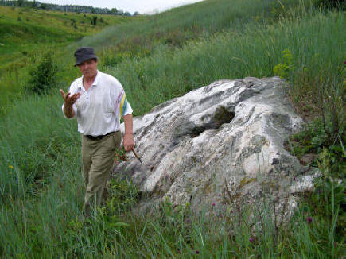
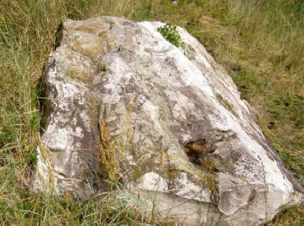
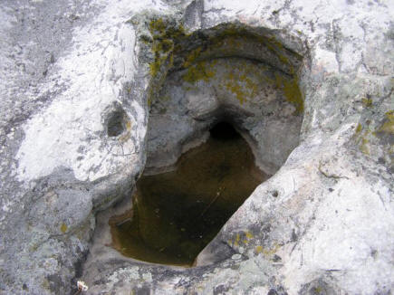
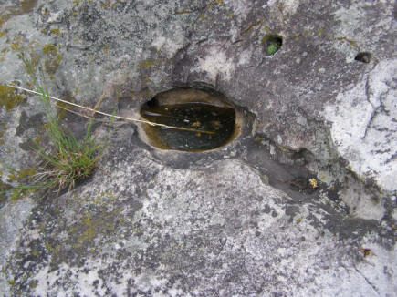
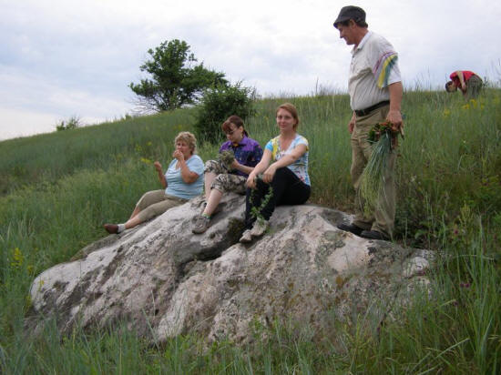

Скуратов
Николай Прокофьевич
Опубликовано: в липецком журнале «Итоги Недели» №33 от 06 08 12;
Газете «Лебедянские Вести» №121 от 18 08 12;
На блоге http://www.proshkolu.ru/user/NikolaiSkuratov/blog/267847/
Варькин камень. Легенда из цикла «Каменная сказка Верхнего Подонья».
Много лет назад, в пору моего детства, слышал эту древнюю легенду от своих односельчан. Полузабытая, она напомнила о себе снова, когда моя сестра Вера стала раз за разом рассказывать о необычном камне, как оказалось, вечном её хранителе, который лежит в овраге, и настойчиво предлагала его посетить. В настоящее время к камню протоптали тропинку туристы, а из него сочится вода. Если бы не легенда, то принял бы его за огромную голову белого медведя и назвал «Медвежьим камнем», тем более что ещё одно изображение медведя имеется на его верхней поверхности, обращённой на север.
 
{kind=link}
Восстановить историческую датировку событий, о которых говорится в легенде, оказалось делом нетрудным. Крымские татары набегами проникали в Лебедянский край вдоль берегов Дона и терзали юг Руси почти до конца 17 столетия. Они грабили поселения и уводили людей в рабство. Один из последних набегов прошёл через село Большая Попова Поляна (современное Большое Попово). А единственный военно-морской поход, почти забытый, стартовавший от села Романова по Дону до крымских берегов, был организован царём Алексеем Михайловичем в 1662 году. Его 350-летний юбилей можно отметить в этом году, как раз в году, объявленном годом Российской истории. Военный поход, который стал генеральной репетицией донских походов Петра Первого и прологом покорения Азова.
В те времена село было небольшим. В двух домах на восточной окраине жили и трудились на земле две дружные семьи. В одной из них вырос сын Василий. Пора бы парню жениться, но он не торопился, потому что ждал, когда у соседей подрастёт красавица Варя. Свободные минуты, когда можно было уйти от дома и погулять, в деревне выпадали редко, чаще всего ночью. Место для прогулок и свиданий в наших краях только одно – это живописные донские берега. Кто же из лебедянцев не встречал светлые зори над Доном?! В июне, когда заря не гаснет совсем, а небо на севере остаётся розовым даже в полночь. Влюблённые облюбовали место у большого оврага на окраине села. Сидели на высоком берегу до рассвета, разговаривали о пустяках и мечтали о счастливой судьбе. Днём они работали в поле на своих земельных наделах, в нескольких километрах от Дона. Рядом, на склоне оврага, лежал огромный камень, на котором в минуты отдыха устраивалась парочка.
Когда Варе исполнилось 16 лет, в Петров день сыграли свадьбу. Только их счастье было недолгим. Через несколько недель начался сбор урожая, а этого момента, по-обыкновению, ждали кочевники-грабители. Во время этого набега забрали не только обмолоченный хлеб, но в полон увели всех молодых людей, которые попались под руку. Варю и её отца спас случай – их не оказалось в тот момент дома.
Что было делать? Она вернулась в родной дом, но каждую свободную минуту приходила на места счастливых свиданий, садилась, а слёзы текли и падали на камень. А через положенное время у неё родилась дочка. Так и жили в доме отца, как две дочери. Прошло около четырнадцати лет. Несмотря на горе, Варвара расцвела краше прежнего. Местные парни не раз сватались, но получали отказ. Им было не понятно, кого же она ждёт? Из татарского полона никто никогда не возвращался – это хорошо все знали из опыта прошедших веков.
Однажды приехал из Лебедяни отец и стал рассказывать новости. Мол, прибыл из Москвы боярин, слуга царя Алексея Михайловича, и объявил о государевом указе, по которому надлежало собрать всех мастеровых людей, плотников, кузнецов в село Романово Лебедянского уезда – царь затеял строить флот. А для чего ему понадобился флот? Алексей Михайлович собирался в поход против крымского хана, для его усмирения.
Отец был отличным плотником, и дома не появлялся месяцами. У Вари появилась надежда: а вдруг вернётся домой любимый, освободят его в этом походе.
Пока строили суда, минуло ещё два года. Но вот и настал момент, когда по Дону поплыла царская флотилия вдогонку за едва ушедшим ледоходом. Целый день плыли струги, счёта им не было. Потом историки утверждали, что их вместе с судами, построенными у села Тарбеева на реке Воронеж, было пять сотен, а воинов двадцать тысяч.
Когда суда проплывали мимо, жители выбегали на берег, провожали их и кричали вдогонку: «Ищите моего Петра! Моего Максима!» А Варя просила искать Василия, пока совсем не охрипла. Потом потянулись долгие недели, и появилась новая забота – смотреть вниз по Дону, смотреть и ждать.
Экспедиция была успешной. Флотилия достигла Крыма, воины десантировались на берег и прошли почти его половину. Они освободили много пленников и взяли богатую добычу.
Прошло месяца два. Лето достигло зенита. Наступил и долгожданный день, в который Варя не отрывала взгляда от реки. Предчувствие её не обмануло. В полдень над донским лугом, который в народе называется Кругом, что напротив устья Красивой Мечи, вдруг вспорхнул красным петухом и захлопал на ветру крыльями царский вымпел на мачте переднего струга, а потом, обогнув этот Круг, выплыл белый парус с огромным ликом Христа. Варя вскрикнула и упала без чувств. На крик прибежала дочь, а на берег высыпали все соседи.
Южный ветер наполнял паруса, и струги быстро бежали навстречу течения, а когда Варя пришла в себя, уже проплывали мимо, а с одного внимательно всматривался в берег бородатый мужчина. Вдруг он спрыгнул с борта и поплыл к берегу. Подошёл к людям Василий и остановился в недоумении: перед ним стояли две красавицы, одинаковые, как близнецы. Обе бросились к нему и повисли на шее.
Счастливый финал очередной истории о любви и верности, как во всех сказках. А вот продолжение мне не известно, но его не трудно предположить. Не сохранилось в памяти, из какой фамилии были эти счастливые люди. Только нет в других краях девушек красивее, чем в Лебедянском крае. А ты, доченька моя Анюта, самая красивая!
Можно, конечно, не верить легенде, но тогда, почему камень, на котором ждала своего любимого и плакала Варя, до сей поры течёт её слезами? Он лежит на склоне оврага Крутой верх, к югу от железной дороги, в направлении на юго-восток от окраины села. Пройдите вверх по правому берегу оврага 1300 метров, почти до берёзовых посадок, пересекающих его в поперечном направлении, и убедитесь сами. Координаты камня: 52º55´11.63´´северной широты и 39º07´05.08´´ восточной долготы.

В двух выемках-глазницах камня скапливаются Варькины слёзы, как в кувшинах. Приходят сюда люди, наполняют ёмкости, уносят с собой и утверждают, что вода целебна, помогает от всех недугов. Главное – верить. А те, которые знают настоящую её тайну, под большим секретом расскажут, что эта вода имеет силу верности и любви, а лечит она неверных супругов.
Местная молодёжь утверждает в несколько ином варианте. Влюблённым, встречавшим на донском берегу рассветы, нужно в день свадьбы прийти к этому источнику и испить чудесной воды. Причём, воду надо черпать руками, как ковшиком, а поить друг друга с ладоней. А какой в этом смысл? Уверяют, что если пройти через этот ритуал, то брак никогда не распадётся, а любовь будет верной и вечной.
Может быть, может быть…

Ничего не кончается в этом чудесном мире. Как и прежде льются соловьиные песни, дают концерты донские лягушки, сверкают фотовспышками зарницы, стараясь навечно запечатлеть его красоту. Седой благородный красавец Дон катит и катит свои ласковые светлые струи, а на крутых берегах оврага, вокруг Варькиного камня, в канун Петрова дня краснеют россыпи спелой дикой клубники.
Смотрит малиновым оком, любуется и улыбается влюблённым парочкам недремлющее летнее небо, и приходит рассвет…
Николай СКУРАТОВ. Село Большое Попово. Июнь 2012.